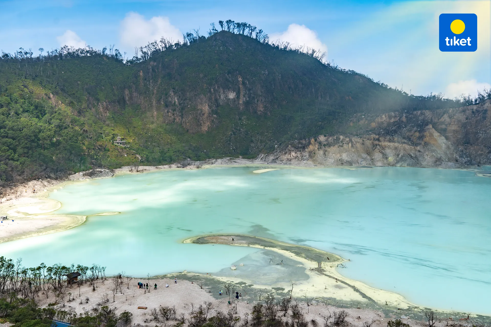

Detail Tempat Wisata
Kawah Putih
 Kawah putih merupakan sebuah danau yang terbentuk dari letusan Gunung Patuha. Tanah yang bercampur belerang di sekitar kawah ini berwarna putih, lalu warna air yang berada di kawah ini berwarna putih kehijauan, yang unik dari kawah ini adalah airnya kadang berubah warna. Danau Kawah Putih sendiri berada pada ketinggian 2194 m Perairannya yang berwarna biru kristal berubah dengan kondisi cuaca, dan dilapisi dengan pasir putih halus, memberikan pengunjung pengalaman dunia lain. Bahkan vegetasi di sekitar area ini sangat berbeda dengan yang di bawah.
Alamat Tempat Wisata Kawah Putih
| Nama Tempat Wisata | Alamat |
| Kawah Putih | Desa Alam Endah, Kecamatan Rancabali, Kabupaten Bandung Jawa Barat |